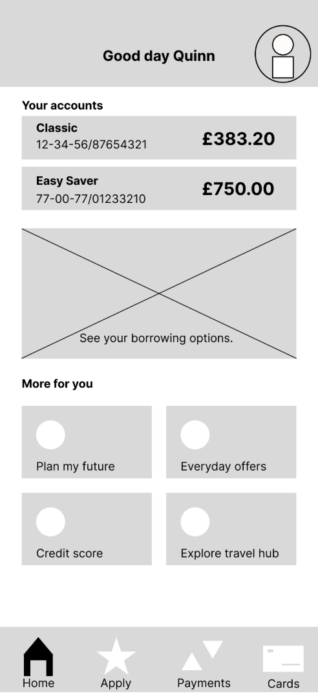
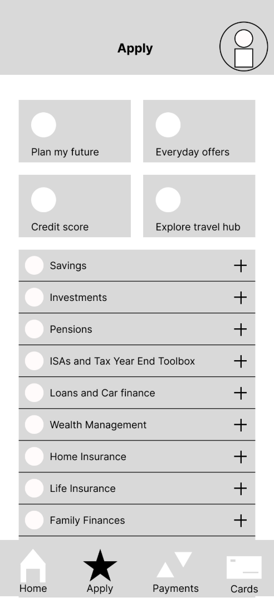
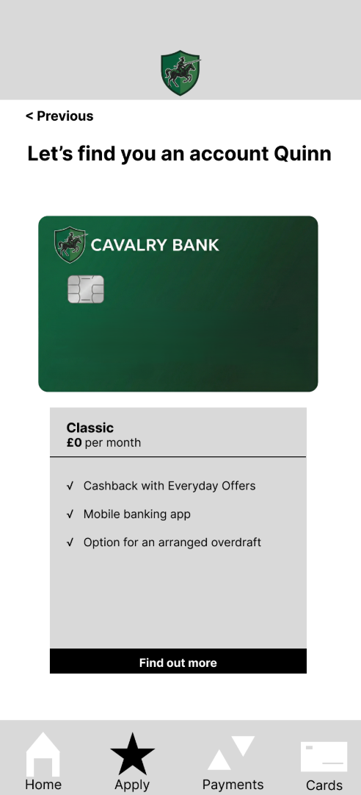
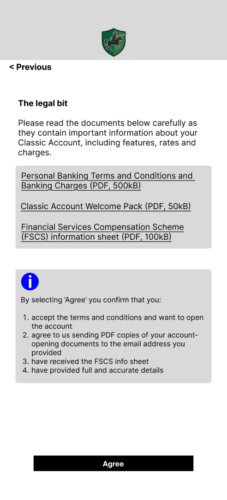
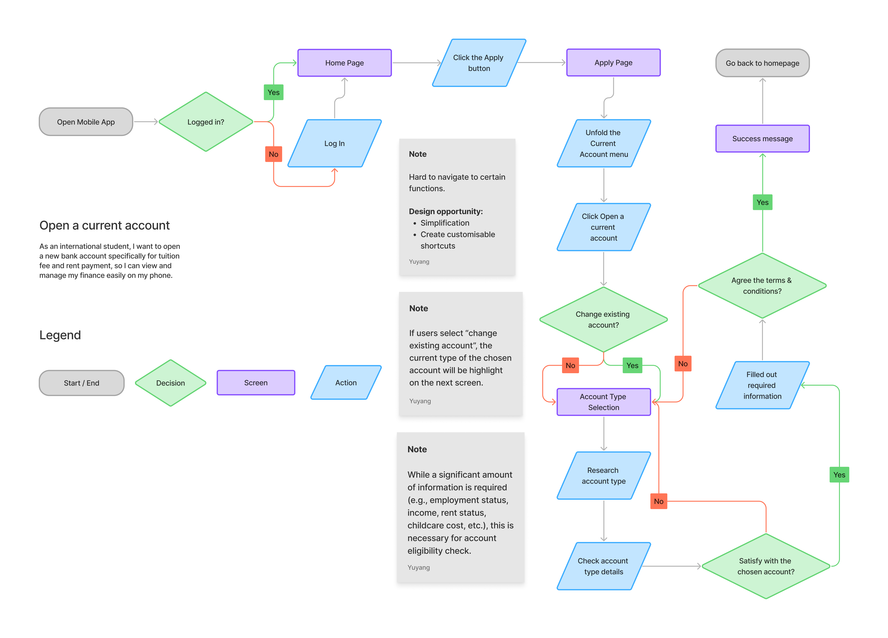
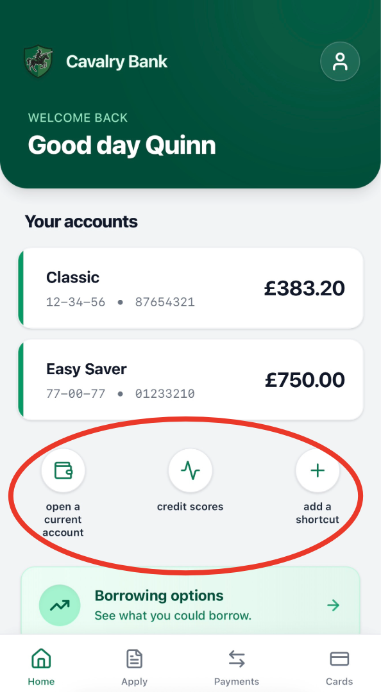
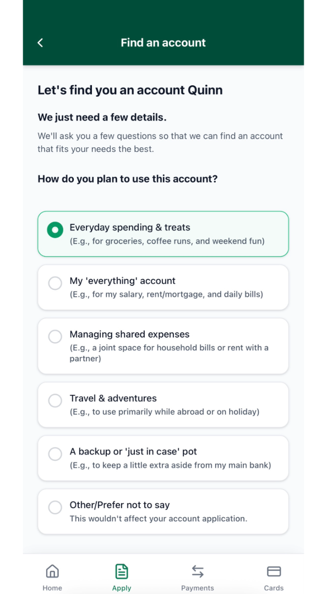
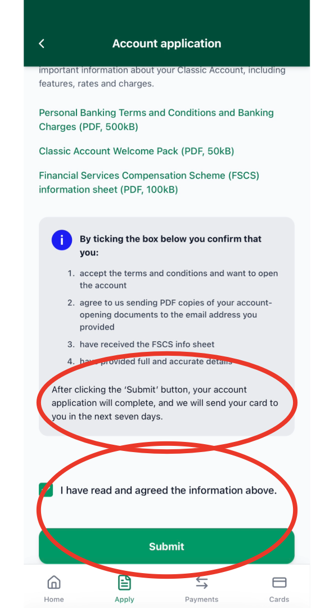
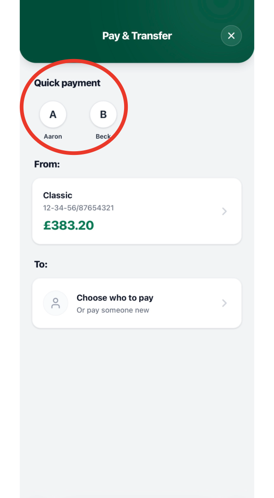
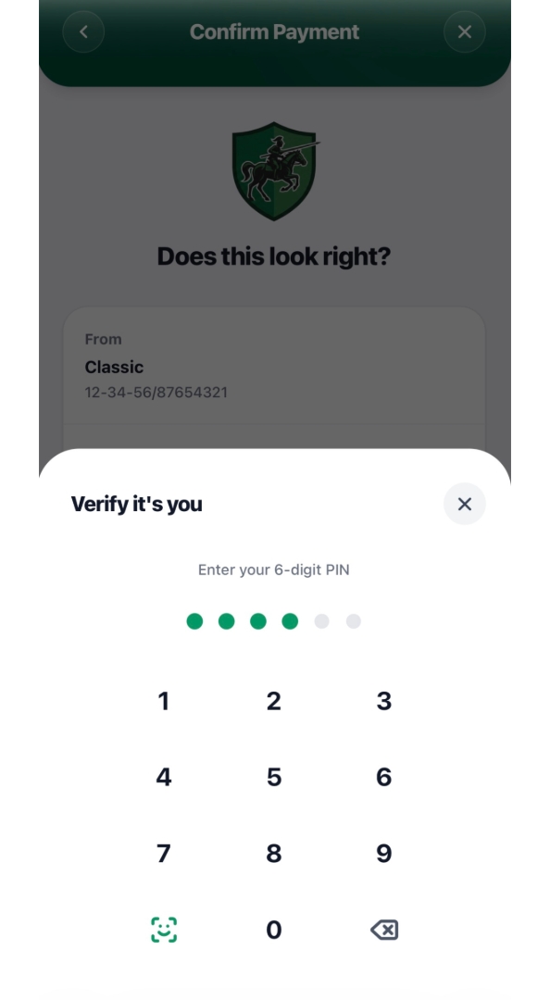

Cavalry Bank
Cavalry Bank: A Mobile Banking App
Understanding Users with Different Cultural Backgrounds and Their Experience with Mobile Banking
Project Overview
Product, Duration, Role & Responsibilities
The Product
Cavalry Bank is a fictional mobile banking app based primarily on a leading UK bank. Users can manage their bank accounts, view card information, and make transfers within the app.
Project Duration
January 2026 - April 2026
My Role
UX Researcher
Responsibilities
User research, Prototyping, and Usability Testing
Background & Challenge
Understanding the Context and Defining the Problem
Background
UK banks are changing. Instead of visiting a local branch, many users prefer managing their finances on their phone. High street banks launched their mobile banking apps and have continuously improved the user experience over the past decade. However, while managing personal finance on a smartphone sounds convenient, not everyone is comfortable with it.
After a first glance and comparing to competitors, there seem to be several areas for improvement.
The Problem
- Most functions are hidden deeply under accordion menus and/or require multiple steps to access
- Some pages have unclear instructions
- Consequence of clicking certain buttons tend to be unpredictable
The Goal
Make sure users can use the product to manage their money safely, confidently, and seamlessly.
This should at least include:
- Opening, viewing, and closing accounts
- Viewing card details
- Making bank transfers
Understanding the User
Personas and User Journey Maps
I began by emphasising my users: "How would I use this app? How would I feel about the user flow?". By writing down the user journey map, several potential pain points emerged.
Focusing on users with particular characteristics, a usability test was conducted with 5 participants from my personal network to test whether users can manage their individual finance smoothly with Cavalry Bank and understand their pain points.
May Zou
"The banking system seems different here, I need to figure out how to manage my money safely."
Background
May is a 23-year-old international student from China who recently moved to the UK to pursue her master's degree. Her English is academic-fluent, and she has good digital skills. However, she's not very familiar with the banking system here, nor those jargons (what is a "standing-order"?)
Needs & Pain Points
- Apply for a new current account to manage her money without visiting a local branch
- Make bank transfers and manage accounts smoothly and flawlessly
- Not familiar with terms and jargon widely used in the British banking industry
- Anxious about taking the wrong move - "What if I didn't pay my tuition fee to the correct account?"
May's User Journey: Opening a UK Account
Step 1: Determination
Actions: Review daily financial behaviors; Assess if a UK bank account is necessary Emotions: "I have a credit card issued by my bank in China, but not sure if I can use it for all my expenses. There are also too many different banks..." Improvement: A mobile banking app with essential functionalities clearly presented, so users can easily figure out if their needs can be met.Step 2: Discovery & Selection
Actions: Download the app; Register a user account; Research account options Emotions: "I'm lost and confused. It wasn't easy to find the 'open a new account' button..." Improvement: Avoid hiding critical functionalities in deep menus. Put customizable shortcuts on the homepage.Step 3: Application
Actions: Select prospected account; Fill out eligibility questions Emotions: "There are TOO many questions; some of them are confusing..." Improvement: Only ask necessary questions and provide detailed guidelines accessible right next to relevant blanks.Step 4: Agreement & Next
Actions: Agree to Terms & Conditions; Sign required documents Emotions: "Wait, what happened? I clicked on 'Agree', and now it's finished. Where is the final confirmation?" Improvement: A final confirmation with all relevant details presented clearly is needed.Testing the Design
Thanks to the variety of financial services provided by banks, modern mobile banking apps tend to feature tons of functions. However, a mobile banking app should essentially be something people use to manage their personal finances.
I replicated the key user interface of the mobile banking app in Figma and focused testing on key functionalities: account management, payment, and card management.
Test Methodology
Current and Prospective International students new to UK or haven't lived there before
Moderated usability test
Account, card, transfer
Time, errors, SUS score
Lo-Fidelity Screens
Screenshots of low-fidelity prototypes used in the initial usability tests. Click here to view the interactive Figma prototype.




1st Round Usability Test
As planned, I measured the design through participants' speed, error/dropoff rate, and usability scales. The results highlighted several areas for improvement:
User Flows
Everyone complained about the buried functions and the overwhelming user flow, especially for opening an account. So, I write down the user flow for opening an account to better understand the problem and identify key pain points.
Key Pain Points Identified
Hidden Functionalities
Functions hidden under complex menus. Users need multiple clicks to find the entrance.
Too Many Options
Too many account types provided in a single screen, overwhelming users.
Unclear Consequences
Users feel unsure about the consequence of actions. "Agree" button immediately completes without review.
Missing Security
No authentication before critical actions like viewing card PIN or confirming transfers.
Refining the Design
Based on the pain points identified, I created several potential design solutions with pen & paper. The key improvements included:
- Add customizable shortcuts on the homepage to make frequent functions instantly accessible
- Replace "Agree" with "Submit" + checkbox to highlight submission consequence
- Add an account advisor to help users find the right account through a brief questionnaire
- Auto-add quick payment shortcuts on pay & transfer page for faster access
- Add final verification with PIN or FaceID before confirming transfers
Key Improvements
High-Fidelity Screens (Refined Design)
High-fidelity prototype screenshots showcasing the improved design solutions.





2nd Round Usability Test
Improvement Summary: Task time reduced by 46%, all error rates eliminated, and safety perception increased from 6.8 to 8.0 out of 10.
Interactive Prototype
Below is the interactive high-fidelity prototype built in Figma. You can explore the design improvements, user flows, and design solutions.
Going Forward
Key Takeaways
Mobile Banking is Special
For a mobile bank, it's almost inevitable that a significant amount of functions are zipped into a single app, and users' behavior and preferences can vary largely. For apps like mobile banks which feature too many functions, it is better to allow users to create shortcuts to their frequently-used functions, rather than trying to highlight certain features for everyone.
Safety is King, But How Safe is Safe?
Safety is the top requirement of a banking app, but users may have different levels of safety requirements. A UK user might find it normal to enter password only once at login. This can be scary for someone who lived elsewhere and recently moved to the UK. It's important to empathize with users from different backgrounds who may have different expectations and needs regarding security.
Experience-Business Trade Off
While banks want to advertise their products (e.g., premier accounts), users can get overwhelmed by too many options. Presenting 5 different accounts at once may not be optimal. Instead of filling users' screens with various products, it's better to use a brief questionnaire or LLMs to help users find the accounts they need.
Next Steps
Filling Forms is Exhausting
Even with shortcuts on the homepage, the long account-opening procedure remains challenging. The 10-step process is necessary for legal and eligibility verification, but the next iteration should explore: is it possible to simplify the procedure for applicants to a basic-level account?
Beyond Account-Opening
The challenges found in account opening apply to many other functions. Since users may only open one or two accounts but use other functions more frequently, it's important to iterate over other functions and provide smooth, safe user experiences across the entire app.
AI + UX?
As a side note from this project: LLMs can significantly improve the prototyping workflow. Start with lo-fi sketches or wireframes with details, send them to Figma's AI features with clear prompts, and you'll get near-production-ready hi-fi prototypes in minutes. With basic TypeScript knowledge or comfortable AI-assisted coding, you can build highly polished prototypes. LLMs are becoming one of the most powerful tools in UX design workflows.